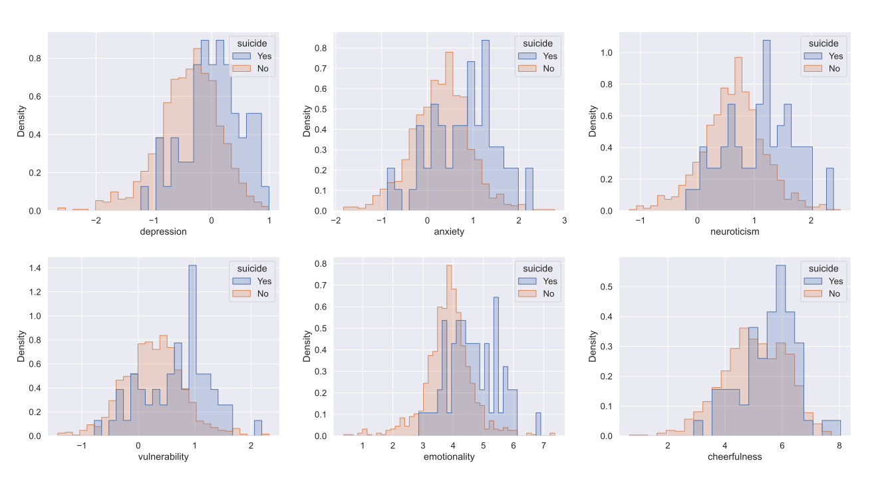
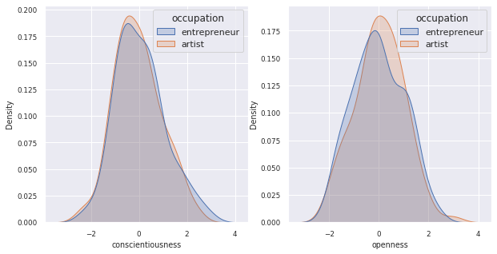
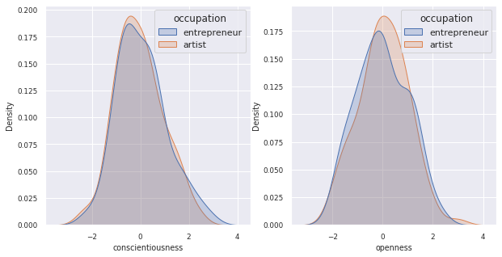

“Words are the model, words are the tools, words are the boards, words are the nails.”
Richard Rhodes
Introduction
Language is the main mode of communication through which a person expresses their thoughts and feelings. We tend to form an opinion of a person after just a few interactions with them either through spoken or written conversation. This then raises an interesting question: Does language use truly reflect personality types? While the idea that language and personality are related is not new [1], systematic examination of how word use relates to individual differences in personality traits have only been studied by researchers in the recent past [2][3]. Inspired by these studies, in this article, we aim to explore and analyze this relationship using Quotebank, an open corpus of 178 million quotations attributed to the speakers who uttered them, extracted from 162 million English news articles published between 2008 and 2020 [4].
From Text to Personality Score
Before delving into various analysis on personalities, we would like to give you a background on the core ideas and methods enabling our study. We are given a corpus of text for each speaker and somehow, we would like to transform this text to a number so that we can quantify the personality of a speaker and do all kinds of comparisons. How do you go from a piece of text to a personality measure you ask? Good question! We asked the same question and luckily, we were not the first people to have thought about it! There have been several studies on this topic in the past that have shown significant correlations between different word categories (e.g. pronouns, positive/negative words etc.) and personality types. Most of these studies focus on finding the relationship between personality types and so-called LIWC word categories[5] using supervised learning methods. After an extensive examination of these psycho-linguistic study papers, we decided to use the correlation results found between the Big Five personality types[6] and LIWC word categories, from a large-scale study of personality and word use among bloggers[7].
More concretely, given a sample corpus of text for a sample of speakers, we first run this text through the commercial LIWC software[8] (seriously, we bought it!) to produce a matrix of frequency numbers (let’s call it L) where rows correspond to speakers and columns are the different word categories. On the other hand, we have a matrix of correlations (let’s call it C) between the very same word categories and all the Big Five personality types and subtypes (extracted from [7]). We then simply multiply these matrices (we also first normalize L across word categories) to produce our personality scores (let’s call it P). Mathematically speaking, P = LC where the rows of P correspond to different speakers and columns are the different facets of Big Five personality traits (e.g. depression, trust, dutifulness etc.) Voila! We started with a piece of text and ended up with a bunch of numbers presumably corresponding to personalities of people. In the rest of the article, we will try to analyze these numbers for people across professions, idealogies, countries, genders etc. to see whether these correlations hold and reveal the real world of personalities.
What is Big Five anyways?
The Big Five Model developed from the 1980s onwards is the most widely accepted personality theory held by psychologists today. The theory states that personality can be boiled down to five core factors, known by the acronym CANOE or OCEAN. In addition to the five categories, each trait is also broken down into multiple facets. Although currently, there is no consensus as to the identity and number of facets within the Big Five, below we list the most commonly used ones grouped under each personality trait.
anxiety
hostility
self-consciousness
immoderation
vulnerability
friendliness
gregariousness
assertiveness
activity level
excitement seeking
cheerfulness
imagination
artistic interests
emotionality
adventurousness
intellect
liberalism
trust
morality
altruism
cooperation
modesty
sympathy
self-efficacy
orderliness
dutifulness
achievement striving
self-discipline
cautiousness
The Sleepy, The Crazy and The Others
Quotebank dataset contains quotes mostly from politicians and this is not surprising as they tend to dominate the news around the world. US politicians especially stand out in terms of the coverage they get in the media with over 200k quotes attributed just to Donald Trump. Then naturally we thought it might be interesting to analyze these politicians’ personalities and see if they reflect our perception about these people. We selected top 200 US politicians (100 Democrats and 100 Republicans) who are quoted the most and made an interactive heatmap to easily compare their personalities across all dimensions.
The results are quite interesting indeed. We find that while Donald Trump and Lindsey Graham are quite close on most scales of personality, Obama and Trump seem to have opposite personalities. On the other hand, Obama and George W. Bush show similar traits. Individually, we note that Trump has high depression, low orderliness, Obama has high emotionality, Bernie Sanders has high neuroticism and Biden shows high modesty, morality and trust while scoring quite low on excitement seeking and extraversion.
The Grand Standoff
Let’s zoom in a bit more and compare the famous rivals in terms of their personality.

- Boxplots & transparent black dots: 1000 People in Control Group
- Red dot: Donald Trump
- Blue dot: Hillary Clinton
According to [9] Clinton scores low on neuroticism, average on agreeableness, extraversion, openness, and high on conscientiousness while Trump scores very low on agreeableness, conscientiousness and emotional stability, average on openness, and very high on extraversion. Our results agree with the research on agreeableness and conscientiousness but contradicts on extraversion, neuroticism and openness. However, the personality rating is to some extent subjective. Even for the experts in this specific case, Trump supporters and Clinton supporters will rate significantly differently, as depicted in a later finding [10].
Cheerful Gregarious and Intellectual Liberals?
Next, we decided to do some cluster analysis on these politicians to see if there are some easily discoverable ones. To cluster the politicians in terms of their personality, we first perform PCA to reduce the dimension of our dataset since we have 35 variables for personality traits. Then based on the major two dimensions that explain most of the variations, we produce k-means clustering. We choose k = 2 as the optimal one by looking at the total WSS and silhouette plots.
K-means clustering gives us two groups and if we try to interpret these 2 clusters based on the PCA components, we funnily end up with descriptions like Cheerful Gregarious and Intellectual Liberals.
Neurotic Extraverts and Conscientious Adventurers
If you are still wondering why we haven’t applied our algorithm on a typical gender analysis, wonder no more! Of course we did and we got some interesting results. We selected quotes for top 1000 men and women speakers (500 each) and analyzed the personality scores between them. Let’s first look at a heatmap of correlations to get a sense:
 We can see unsurprisingly that men and women differ on most dimensions. But how significant are these results? We found that most of the differences are quite significant as well using hypothesis testing.
Let’s check the underlying distributions for both men and women:
These graphs (and the accompanying significance tests) clearly show that women tend to be more neurotic than men. But they also score quite high on extraversion, excitement seeking and gregariousness. These results are actually not so surprising if we take a look at the literature on the gender differences in personality such as [10]. Previous findings have in fact shown that women are known to report higher scores on Neuroticism and Extraversion.
We can see unsurprisingly that men and women differ on most dimensions. But how significant are these results? We found that most of the differences are quite significant as well using hypothesis testing.
Let’s check the underlying distributions for both men and women:
These graphs (and the accompanying significance tests) clearly show that women tend to be more neurotic than men. But they also score quite high on extraversion, excitement seeking and gregariousness. These results are actually not so surprising if we take a look at the literature on the gender differences in personality such as [10]. Previous findings have in fact shown that women are known to report higher scores on Neuroticism and Extraversion.
On the other hand we find that men are more conscientious while being great adventurers at the same time: We should also note that people in our dataset are high achievers which mean they might not manifest the same gender personality differences we see in ordinary people. For example, women are known to be more agreeable than men in general, but in our analysis we found the difference not to be as significant and even tilted towards men. This might indicate that women push the boundaries of disagreeableness to achieve a high status in the society.
Can personality alone predict your gender?
If there are stark differences in personalities across genders, could they be a good predictor of a gender? Maybe. We ran a simple logistic regression model using solely the personality attributes to predict the gender of a person and it achieved a cross-validated 76% accuracy. And guess what were the best predictors among all the personality traits? You guessed it right! Neuroticism and conscientiousness.
As a bonus, we also built a decision tree to identify the gender of a person given their personality trait scores and achieved a 71% cross-validated accuracy.
Shining a light onto the dark side
Every year 703,000 people take their own life, and many more attempt suicide[11]. Each one of these cases is a tragedy, affecting the victim’s family and friends, and leaving lasting scars. There is still much we have yet to learn about suicide, as our current understanding is underwhelming, but suicide has been linked to negative personality traits like depression and anxiety [12] [13]. Can we observe these traits by just looking into a person’s quotes?
To answer this, we have extracted the quotes of suicide victims from Quotebank, and then compared them to a control group - a selection of the most quoted speakers. You can see the comparison between the distribution of these two groups below.

From the plots above we can observe that suicide victims have higher traits like depression, anxiety and neuroticism. These differences are obvious from the plots alone, but they are supported by hypothesis testing we ran on the figures as well. One would intuitively connect these traits to suicide, and more importantly they have been linked with suicide in studies. This gives us confidence that our method can correctly identify personality traits based on quotes alone.
We also observe increased cheerfulness in the suicide victim population, something that one would not expect to be the case. How can some of the most miserable people be so cheerful? This could be explained with the fact that a lot of depressed people mask their emotional state, and do it rather well. A great example would be Robin Williams (not present in the dataset, missed by a few years) who was one of the greatest comedians of his time, making people all over the world laugh and earning recognition and awards for his films. Like Williams, a lot of depressed people hide their sadness behind a facade of cheerfulness.
Bill Gates or Bill Murray?
If someone asks you to describe the personaity traits of an entrepreneur, what would you say? Most people would describe a driven, extraverted, energetic, action-oriented person. However, they might not describe the same for an artist. What do you think? Are entrepreneurs and artists quite similar to each other in their personality traits or are they different?
There have been several studies comparing the personality traits of entrepreneurs and artists [14]. Surprisingly enough, most of these researches show that both entrepreneurs and artists are quite similar to each other in their personality traits. Let’s see what Quotebank data has to say about our question.
We selected quotes of top 100 entrepreneurs and artists and analysed the personality between them. Guess who is the top entrepreneur speaker? You are right if you guessed Trump! Who can ever beat him? (Biden obviously XD)

From the above heatmap, we can see that both entrepreneurs and artists are quite similar in many personality types. To truly understand the similarity we compared the distributions of the personality scores for the Big Five personality types i.e, neuroticism, extraversion, agreeableness, conscientiousness, openness.
 

We can see that even the distributions are quite similar to each other. However, to put a cherry on the top we did hypothesis testing on the similarity of the Big Five personality score values of artists and entrepreneurs. The signifince test shows that the personality values for artists and entrepreneurs are similar.
The research also shows that artists score higher in emotionality and agreeableness at the same time entrepreneurs score higher in self-efficacy and extraversion. Our analysis agrees with the research in emotionality value. However, the personality values are same for both entrepreneurs and artist for the other three personality traits. To check the significance of these values, we did hypothesis testing on them. T-test on these values show that the difference is not significant. Which means that there is no significant difference in personality of artists and entrepreneurs.
Does world have a personality?
I think by now you see where we are going with this, don’t you? As a closing analysis, we are going to take this idea even further and attempt to see if we can come up with a personality score for each country and compare those through time. Our speakers in the Quotebank dataset have the associated nationality attribute taken from Wikipedia and we will use these to identify top speakers for each country. These people will be the representative for their respective countries and we will assume their averaged personality scores reflect their country’s hypothetical personality (Of course this is somewhat naive assumption, but if you think about it, top speakers are most likely the politicians and other famous celebrities who are typically the face of their countries). First let’s visualize how well each country is represented in the media by their number of speakers:
We immediately see that the US dominates the media with more than 400k speakers and Africa, Middle East and Middle Asia are some of the least represented regions. In Europe, somewhat surprisingly Germany and France seem to be dominating the media with number of mentioned speakers twice that of UK.
With this simple analysis out of the way, we will choose 100 most quoted people from each country per year and compute average of their personality scores to obtain a single personality score for each one of the Big Five traits per year per country. We then visualize all of these graphs in one interactive graph where you can choose a specific personality trait and also slide through time.
We can see that while the West is pretty stable, Africa, Europe and Asia seem to be in constant change of personalities.
Conclusion
The method we devised has proven itself able to identify personality attributes of the speaker based on the quotes alone. We have focused on different groups of people, based on their occupation, gender, manner of death, and nationality, and have been able to make conclusions about their personalities that are grounded in previous scholarly work, as well as some novel ones.
In conclusion, we can say that a person’s words and they way they use them definitely portrays their personality. Be careful what you say, you may reveal more than you mean to!
For more information you can refer to our analysis repo.
Brought to you by
Mete Ismayil
Yiren Cao
Andrija Kolic
Rohith Jayakumara Sarma
FIN